Back in November I decided to type up all the Family Basic games in January issues of Micom Basic. That covers 1985-1996, 12 issues, and 22 games since some years had multiple games in the January issue. Lets dive in and take a look at some of the more notable games from 80s to 90s.
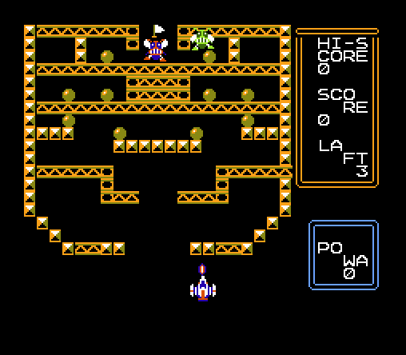If you've ever watched Equilibrium or apparently Wanted (never seen it), you'll know about bullet curving. This isn't quite that, but you do have to guide your shots around corners. You're a fighter pilot trying to shoot a fly. There's another re-spawning, suicidal fly that is attempting to crash into you to destroy you. There are also quite a few steel girders in the way that you need to destroy and some impenetrable blocks that you need to shoot around. While you're at it, you need to destroy power balls to increase your bullets' POWA so you can destroy the main fly and reach the flag behind it. You have 3 lives LAFT and there are multiple levels. You control your plane until you shoot (hold B) and then you control the left/right of your bullet as it speeds forward. Take out the girders and power balls but make sure to keep hitting the green fly whenever it gets close to you. Getting that final curve for the final fly/flag takes a little practice, but I had a blast with it.
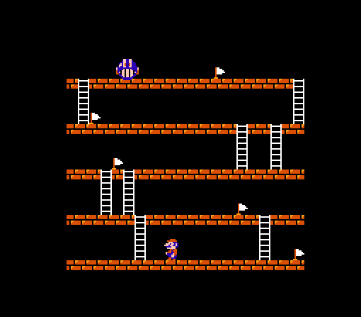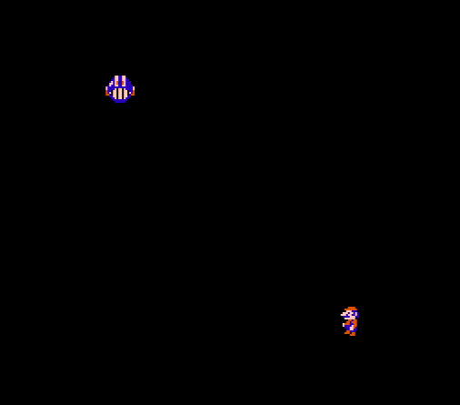Another 1986 game, this time a simple game with a twist. Walk around the level and get the flags before the walking ball can get you. Pay attention to where everything is because as soon as you get the first flag, the screen goes dark and all you see is you and the ball. The ball that is always creeping closer to you. Find a flag and you get light. For a brief time, then back to darkness. Multiple levels and 3 lives total.
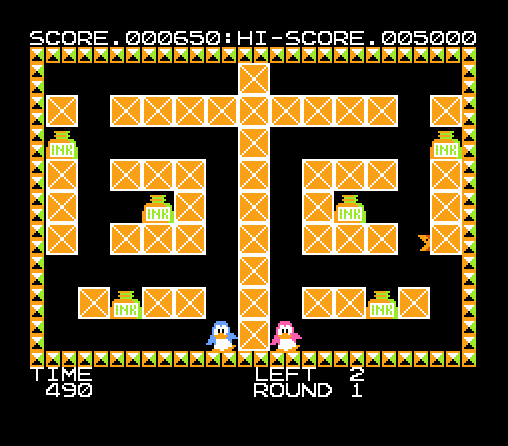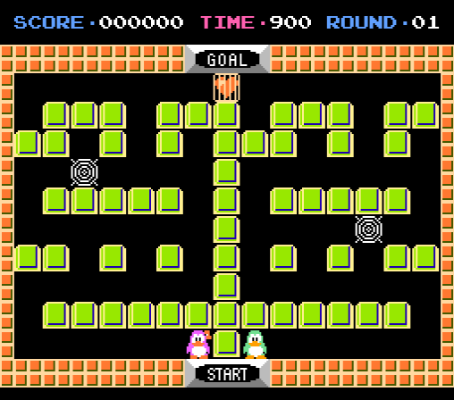This is a Binary Land clone with a decent soundtrack and everything. If you've never played Binary Land (like me), it's a puzzler where you control two penguins at the same time. The trick here is you have to get each set of Ink Wells at the same time while avoiding attacking creatures.
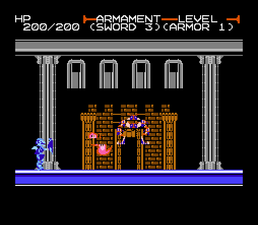This game is an artistic gem. Family Basic limits you to specific sprites: Mario, Pauline, Penguin, Fly, etc. This game somehow uses those to create everything from a shielded knight to a flame spewing tektite to a gowned lady - all 2-3x taller than normal sprites. You are usually limited to a single background in Family Basic. Fisraduth uses darkness to hide portions of the background to give you the feeling of multiple rooms. There are even hidden, secret rooms. It does have its flaws, and I've created an easier version to help out based on recommendations from a NicoNico video. It is still very difficult.
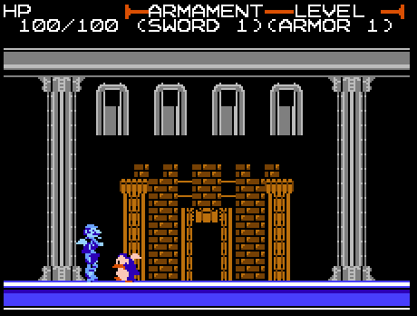You control a knight with a sword that can swing high or low, and you fight creatures that can hit you or shoot things at you. Along the way you gain a shield that can block projectiles and can increase your armor/sword strength by going into rooms (including secret rooms) to collect powerups. Maybe you have to see first hand the limits of Family Basic, but it is at least worth seeing a video of Fisraduth on NicoNico if you don't plan on playing it. I should note that this code needed 1 correction as well. The printed version has a 1 where an I should be. I've included a file with Fisraduth that also has variable/code info to help you manipulate the game.
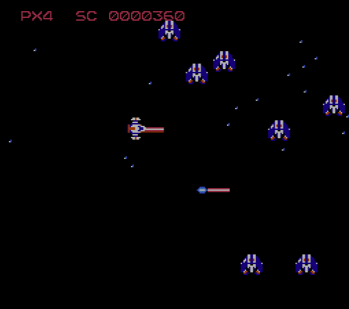Ahh, now we get to shmups. Family Basic lends itself well to shmups. Just check out Yosshin's site (check out the 3 links under ファミリーベーシック関連. Two of them have an English link at the top). Yosshin flourished during the Family Basic days and created a few shmups for Family Basic including a quite popular one called Zacner II. He has a rom of it along with a few others of his creation on his site. He also created Cho Ren Sha 68K. I'm not a shmup person but it's apparently quite popular. We won't look at his games here since none of them were in January issues but here are some earlier shmups that show promise.
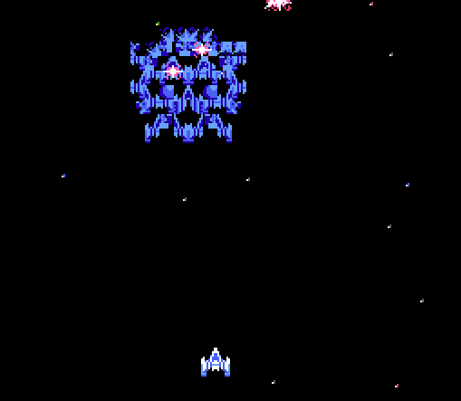Spirit of Satan was made by Shingo and also had an earlier version that appeared in a MicomBasic 1987 issue. Smooth movement, large ships similar to how Fisraduth created larger sprites using pieces of smaller sprites. Multiple enemy types including a mini-boss and boss levels with distinct bosses. The stars move down and with you at the same time in a scroll. Stationary stars during boss fights. It is a little slow, you can only have two shots out at a time, and there are only so many enemy shots at a time. Move with D-Pad and shoot with A/B.
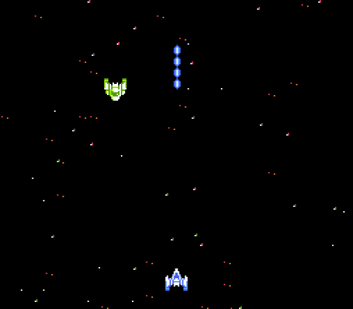Metal Arms was also made by Shingo and a few others though they are credited with nothing. It was the first game I typed up that requires loading and running one program to prepare everything, then loading and running a second program to play the game. There is a 3rd program that is just the credits. This games is extremely smooth and extremely fast paced. There are 3 layers of background stars moving at different speeds which add a lot of depth. Lots of bosses which are smaller but look more ship-like and at least 3 standard enemy types. Bullets all over the screen. As before move with D-Pad and shoot with A/B.
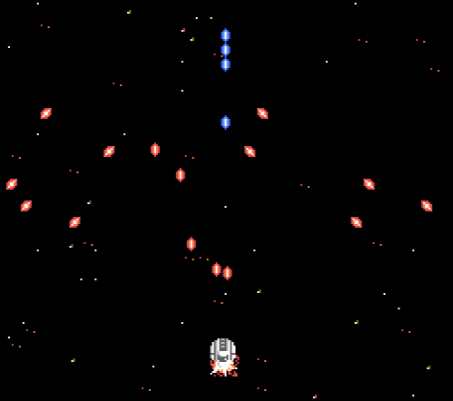Lets step back for a moment. Family Basic v2.1 was released back in 1984 with 2K RAM. v3.0 came out in 1985 with 4K RAM. This was a huge improvement and many coders began using v3.0, but that wasn't enough. PEEK and POKE started being abused to new levels and people began mapping out all of the RAM, not just the 4K they give you. While there was no internet to spread info, there was other people's code you could mine in micomBasic and I'm sure other resources. Now if your program needed more space, you'd create 2 or 3 programs. The first 1-2 programs would store data/variables inside system RAM and the final program could access and manipulate that data to create a game. You could also use PEEK/POKE to manipulate system variables to allow a more dynamic background, faster movement, more sprites on the screen, etc. That's how you got games like Metal Arms and later Zacner II.
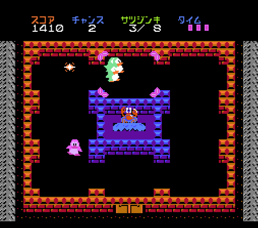But, as we know graphics and speed don't necessarily make a great game. Sometimes all it takes is a new idea or a different way of looking at things. For Tragedy of Ryohyukan there are a bunch of penguins on the screen and your job as detective is to find the killer(s) and mark them pink/red. You can move your cursor with the D-Pad over 9 spots though only the 8 outside ones matter. All the penguins start in the bottom middle square and move counter-clockwise mostly in a group though staggered. Press A to change the direction of the penguins currently standing still. Press B to mark all the penguins standing still as killers. Press Start to see if you've marked all the killers (and just killers) red/pink. If you did, you win the stage. You get points for living penguins and bonus points for speed? or maybe for living killers identified since I believe killers can kill killers. There is a timer in the upper right corner with pink rectangles that disappear over time. If you run out of pink rectangles, you lose. If the killers kill all the innocents, you lose. You can lose up to 3 times before it resets you back to the main screen. There are 8 stages and as of stage 3, each stage seems to be the number of killers. I love this game.
MicomBasic 1991/01 - Act Hands - is a tetris-like game with a twist. The big takeaway is the background is heavily influenced by Dr. Mario from the previous year.
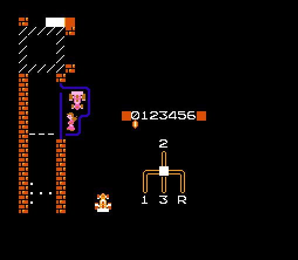MicomBasic 1992/01 - Driving School - you have a manual gear shift on the screen that you have to manipulate. There isn't much gameplay beyond crossing the finish line, but it is a very neat concept game.
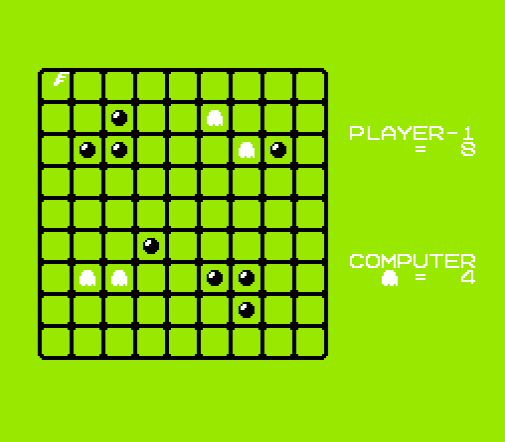MicomBasic 1996/01 - Turn - a board game influenced by Othello. Later in MicomBasic's life, the games get less interesting, but I like the simplicity of this game's code. It does quite a lot with as little code as possible.
MicomBasic 1996/04 - is a quiz show game. I really don't want to type up a quiz show game right now. It is notable as the last Family Basic game published in MicomBasic. Two months before the release of the N64. Let that sink in. Oh yeah, and the Playstation had been out for almost a year and a half at this point.
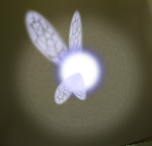
Hey! You! Want all the thrill of finally getting code to run (yay it works!) without all the worry of figuring out to make a game of your own?
Join the Typing Task Force at Gaming Alexandria Discord!
Really, it's exactly like that. Here's my process. Find some code to type up but ignore all the descriptions of the game. Not hard since they're in Japanese. Type in the code (an hour or two depending on the code). Run the code a couple times to figure out your mistakes and maybe compare the code to the original (half hour). Finally, run the game and see what you've created! Occasionally you get a dud, but most of the games printed in magazines seem to be the cream of the crop at that time, so it's almost always worth it. Not to mention you'll get drawn into even the simplest game because YOU CREATED IT!
The best part is, you don't have to devote much time. When I type up code, I do half an hour here or there and have a game in 2-3 days. Try it. If it pulls you in, great! Do more! If it doesn't, well you lost a few hours of your life. If that's the case, let me know and I will personally write out a personalized apology message to you. Free of Charge. You won't find that offer many places.